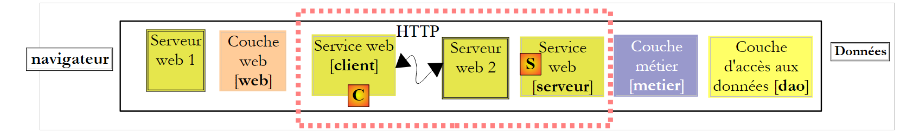
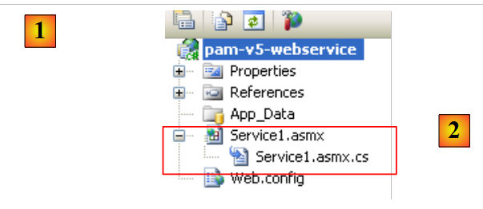
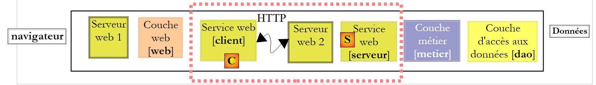
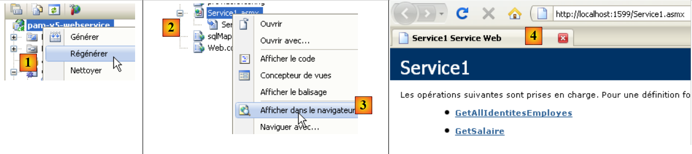
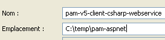
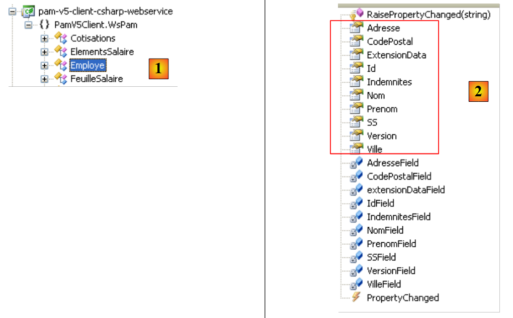
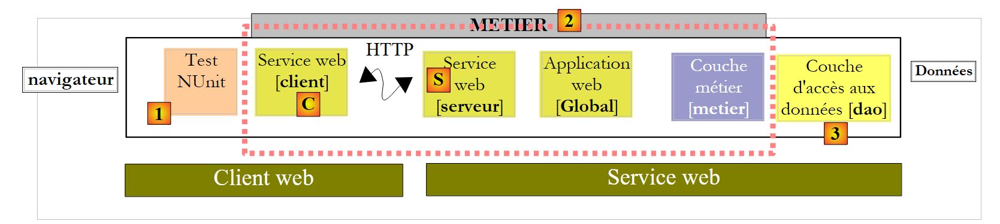
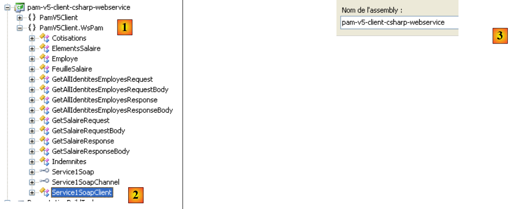

9. La aplicación [SimuPaie] – versión 5 – ASP.NET / servicio web
Lectura recomendada: referencia [2], Introducción a C# 2008, capítulo 10 «Servicios web»
9.1. La nueva arquitectura de la aplicación
La arquitectura por capas de la aplicación Pam es actualmente la siguiente:
 |
La desarrollaremos de la siguiente manera:
 |
Mientras que en la arquitectura anterior las capas [web], [business] y [DAO] se ejecutaban en la misma máquina virtual .NET, en la nueva arquitectura la capa [web] se ejecutará en una máquina virtual diferente a la de las capas [business] y [DAO]. Este será el caso, por ejemplo, si la capa [web] se encuentra en la máquina M1 y las capas [business] y [DAO] se encuentran en la máquina M2. Aquí tenemos una arquitectura cliente/servidor:
- el servidor está formado por las capas [business] y [DAO]. Al tratarse de un servicio web, requiere el servidor web n.º 2 para ejecutarse.
- El cliente está formado por la capa [web]. Para funcionar, requiere el servidor web n.º 1.
- El cliente y el servidor se comunican a través de la red TCP/IP utilizando el protocolo HTTP/SOAP. Para ello, deben añadirse dos nuevas capas a la arquitectura:
- la capa [S], que será un servicio web. El servicio web recibe solicitudes de clientes remotos y utiliza las capas [business] y [DAO] para satisfacerlas. Hay muchas formas de crear un servicio TCP/IP. La ventaja del servicio web es doble:
- utiliza el protocolo HTTP, que está permitido a través de los cortafuegos corporativos y gubernamentales
- utiliza un subprotocolo HTTP/SOAP estándar, implementado por muchas plataformas de desarrollo: .NET, Java, PHP, Flex, etc. Por lo tanto, un servicio web puede ser «consumido» (el término estándar) por clientes .NET, Java, PHP, Flex, etc.
- Capa [C], que actuará como cliente del servicio web remoto. Su función será comunicarse con el servicio web [S].
- la capa [S], que será un servicio web. El servicio web recibe solicitudes de clientes remotos y utiliza las capas [business] y [DAO] para satisfacerlas. Hay muchas formas de crear un servicio TCP/IP. La ventaja del servicio web es doble:
Esta nueva arquitectura puede derivarse de las anteriores sin mucho esfuerzo:
- las capas [business] y [DAO] permanecen sin cambios
- la capa [web] evoluciona ligeramente, principalmente para hacer referencia a entidades como Employee y Payroll, que se han convertido en entidades de la capa cliente [C]. Estas entidades son análogas a las de las capas [business] o [DAO], pero pertenecen a espacios de nombres diferentes.
- la capa de servidor [S] es una clase que implementa la interfaz IPamMetier de la capa [business]. Esta implementación simplemente llama a los métodos correspondientes de la capa [business]. Los métodos implementados por la capa de servidor [S] quedarán «expuestos» a los clientes remotos, que podrán llamarlos.
- La capa de cliente [C] será generada por Visual Studio.
Los principios de la nueva arquitectura son los siguientes:
- La capa [web] sigue comunicándose con la capa [business] como si fuera local. Para lograrlo, la capa cliente [C] implementa la interfaz IPamMetier de la capa [business] real y se presenta ante la capa [web] como una capa [business] local. Aparte de la cuestión del espacio de nombres mencionada anteriormente, la capa [web] permanece sin cambios. Esta es la ventaja de trabajar por capas. Si hubiéramos creado una aplicación de una sola capa, habría sido necesaria una revisión a fondo.
- La capa de cliente [C] reenvía de forma transparente las solicitudes de la capa [web] al servicio web remoto [S]. Se encarga de todos los aspectos de la «comunicación de red». Recibe una respuesta del servicio web remoto, que formatea para devolverla a la capa [web] en el formato que esta última espera.
- En el lado del servidor, el servicio web [S] recibe comandos de sus clientes remotos. Los formatea para llamar a los métodos de la interfaz IPamMetier en la capa [business]. Una vez que ha recibido la respuesta de la capa [business], la formatea para transmitirla a través de la red al cliente [C]. Las capas [business] y [DAO] no necesitan modificarse.
9.2. El proyecto de Visual Web Developer para el servicio web
Estamos creando un nuevo proyecto con Visual Web Developer:
 |
- en [1], seleccionamos un proyecto web en C#
- En [2], seleccionamos «Aplicación de servicio web ASP.NET»
- en [3], asignamos un nombre al proyecto web
- en [4], especificamos una ubicación para este proyecto
 |
- En [1], el proyecto generado. Se trata de un proyecto web estándar con los siguientes detalles:
- Especificamos que el proyecto es un «servicio web». Un servicio web no envía páginas web HTML a sus clientes, sino datos en formato XML. Por lo tanto, no se creó la página [Default.aspx] que se genera habitualmente.
- En [2], se generó un archivo [Service1.asmx] con el siguiente contenido:
<%@ WebService Language="C#" CodeBehind="Service1.asmx.cs" Class="pam_v5_webservice.Service1" %>
- (continuación)
- - La etiqueta WebService indica que [Service.asmx] es un servicio web
- - El atributo CodeBehind especifica la ubicación del código fuente de este servicio web
- - El atributo Class especifica el nombre de la clase que implementa el servicio web en el código fuente
El código fuente [Service.asmx.cs] del servicio web predeterminado es el siguiente:
using System.Web.Services;
namespace pam_v5_webservice
{
/// <summary>
/// Service summary description1
/// </summary>
[WebService(Namespace = "http://tempuri.org/")]
[WebServiceBinding(ConformsTo = WsiProfiles.BasicProfile1_1)]
[System.ComponentModel.ToolboxItem(false)]
// To allow this Web service to be called from a script using ASP.NET AJAX, remove the comment marks from the following line.
// [System.Web.Script.Services.ScriptService]
public class Service1 : System.Web.Services.WebService
{
[WebMethod]
public string HelloWorld()
{
return "Hello World";
}
}
}
- línea 8: la anotación WebService, que hace que la clase Service1 de la línea 13 se exponga como un servicio web. Un servicio web pertenece a un espacio de nombres para evitar que dos servicios web en el mundo tengan el mismo nombre. Tendremos que cambiar este espacio de nombres más adelante.
- línea 13: la clase Service1 deriva de la clase WebService del marco .NET.
- Línea 16: la anotación WebMethod garantiza que el método así anotado quede expuesto a los clientes remotos, quienes podrán llamarlo.
- Líneas 17-20: El método HelloWorld es un método de demostración. Lo eliminaremos más adelante. Nos permite realizar pruebas iniciales y explorar las herramientas de Visual Studio, así como ciertos conceptos clave relacionados con los servicios web.
 |
- En [1], ejecutamos el servicio web [Service.asmx]
 |
- VS Web Developer ha iniciado su servidor web integrado y está a la escucha en un puerto aleatorio, en este caso el 1599. A continuación, se solicitó la URL [2] al servidor web. Esta es la URL de una página de prueba del servicio web.
- En [3], un enlace que permite ver el archivo de descripción del servicio web. Este archivo, denominado WSDL (Web Service Description Language) debido a su extensión (.wsdl), es un archivo XML que describe los métodos expuestos por el servicio web. Es a partir de este archivo WSDL que los clientes pueden conocer:
- el espacio de nombres del servicio web
- la lista de métodos expuestos por el servicio web
- los parámetros esperados por cada uno de ellos
- la respuesta devuelta por cada uno de ellos
- en [4], el único método expuesto por el servicio web .
 |
- en [5], el contenido del archivo WSDL obtenido a través del enlace [3]. Tenga en cuenta la URL [6]. Es necesario conocer esta URL para los clientes del servicio web.
 |
- En [7], la página a la que se accede siguiendo el enlace [4] permite llamar al método [HelloWorld] del servicio web
- En [8], el resultado obtenido: una respuesta XML. Tome nota de la URL del método [9].
El análisis de las páginas anteriores nos ayuda a comprender cómo se invoca un método de servicio web y qué tipo de respuesta devuelve. Esto nos permite escribir clientes HTTP capaces de comunicarse con el servicio web. La mayoría de los entornos de desarrollo integrados (IDE) modernos permiten la generación automática de este cliente HTTP, lo que evita al desarrollador tener que escribirlo. Este es especialmente el caso de Visual Studio Express.
Antes de continuar con este proyecto, cambiaremos el espacio de nombres predeterminado que se utiliza al generar clases:
 |
Al seleccionar las propiedades del proyecto (clic con el botón derecho del ratón sobre el proyecto / Propiedades), vemos [1] el nombre del ensamblado del proyecto y [2] su espacio de nombres predeterminado.
Una vez hecho esto,
- en [Service1.asmx.cs], cambiamos el espacio de nombres de la clase:
using System.Web.Services;
namespace pam_v5
{
...
public class Service1 : System.Web.Services.WebService
{
...
}
}
- En [Service.asmx], también cambiamos el espacio de nombres utilizado para la clase [Service1] (clic con el botón derecho / Ver código fuente):
<%@ WebService Language="C#" CodeBehind="Service1.asmx.cs" Class="pam_v5.Service1" %>
Volvamos a la arquitectura de nuestra aplicación:
 |
- La capa [S] es el servicio web. Simplemente expone los métodos de la capa [business] a los clientes remotos. Esta es la capa que estamos desarrollando actualmente.
- La capa [C] es el cliente HTTP del servicio web. Esta es la capa que los IDE pueden generar automáticamente.
- La capa [web] trata la capa [C] como una capa [business] local si nos aseguramos de que la capa [C] implemente la interfaz de la capa [business] remota.
Como podemos ver a continuación, nuestro servicio web:
- exponer los métodos de la capa [de negocio]
- se comunicará con la capa [de negocio], que a su vez se comunicará con la capa [DAO].
Por lo tanto, el proyecto debe utilizar las DLL de las capas [business] y [DAO]. Se desarrolla de la siguiente manera:
 |
- en [1], añadimos referencias al proyecto
- en [2], seleccionamos las DLL habituales de la carpeta [lib]. Nos aseguraremos de que su propiedad «Copiar a local» esté establecida en True. Las DLL seleccionadas son aquellas que implementan las capas [business] y [DAO] con soporte para NHibernate.
Una aplicación web de tipo «Servicio web ASP.NET» puede tener una clase de aplicación global «Global.asax», al igual que una aplicación clásica de «Sitio web ASP.NET». Ya hemos visto las ventajas de dicha clase:
- se instancia al iniciar la aplicación y permanece en memoria
- por lo tanto, puede almacenar datos compartidos por todos los clientes que son de solo lectura. En nuestra aplicación, almacenará, al igual que en las anteriores, la lista simplificada de empleados. Esto evitará tener que recuperar esta lista de la base de datos cuando un cliente la solicite.
 |
- En [1], haz clic con el botón derecho del ratón en el proyecto
- en [2], seleccione la opción [Añadir nuevo elemento]
- En [3], selecciona [Clase de aplicación global]
- En [4], el archivo [Global.asax] se ha añadido al proyecto
El contenido del archivo [Global.asax] es el siguiente:
<%@ Application Codebehind="Global.asax.cs" Inherits="pam_v5.Global" Language="C#" %>
El contenido del archivo [Global.asax.cs] es el siguiente:
using System;
namespace pam_v5
{
public class Global : System.Web.HttpApplication
{
protected void Application_Start(object sender, EventArgs e)
{
}
...
}
}
¿Qué debemos hacer en el método Application_Start? Exactamente lo mismo que en aplicaciones web anteriores. Volvamos a la arquitectura de la aplicación y coloquemos allí la clase [Global]:
 |
En el diagrama anterior,
- la clase [Global] se instancia cuando se inicia el servicio web. Permanece en memoria mientras el servicio web esté activo.
- La clase [Global] instancia las capas [business] y [DAO] en su método [Application_Start]
- Para mejorar el rendimiento, la clase [Global] almacena la lista simplificada de empleados en un campo interno. Recuperará la lista de empleados de este campo.
- El servicio web se instancia con cada solicitud del cliente. Desaparece tras atender dicha solicitud. No se comunicará directamente con la capa [business], sino con la clase [Global]. Esta última implementará la interfaz de la capa [business].
La clase [Global] es similar a la ya creada para aplicaciones anteriores:
using System;
using Pam.Dao.Entites;
using Pam.Metier.Entites;
using Pam.Metier.Service;
using Spring.Context.Support;
namespace pam_v5
{
public class Global : System.Web.HttpApplication
{
// --- static application data ---
public static Employe[] Employes;
public static IPamMetier PamMetier = null;
protected void Application_Start(object sender, EventArgs e)
{
// instantiation layer [metier]
PamMetier = ContextRegistry.GetContext().GetObject("pammetier") as IPamMetier;
// retrieve the simplified employee table
Employes = PamMetier.GetAllIdentitesEmployes();
}
// simplified list of employees
static public Employe[] GetAllIdentitesEmployes()
{
return Employes;
}
// employee salary
static public FeuilleSalaire GetSalaire(string SS, double heuresTravaillées, int joursTravailles)
{
return PamMetier.GetSalaire(SS, heuresTravaillées, joursTravailles);
}
}
}
La clase [Global] implementa la interfaz [IPamMetier], pero esto no se indica explícitamente en la declaración:
public class Global : System.Web.HttpApplication, IPamMetier
De hecho, los métodos GetAllEmployeeIDs (línea 24) y GetSalary (línea 30) son estáticos, mientras que los métodos de la interfaz IPamMetier no lo son. Por lo tanto, la clase Global no puede implementar la interfaz IPamMetier. Además, no es posible declarar los métodos GetAllEmployeeIDs y GetSalary como no estáticos. Esto se debe a que se accede a ellos a través del nombre de la clase y no a través de una instancia de la clase.
- Línea 15: El método Application_Start es similar al de las clases [Global] estudiadas en versiones anteriores. Instancia la capa [business] (línea 18) y, a continuación, inicializa (línea 20) la matriz de empleados de la línea 12.
- Línea 24: El método GetAllEmployeeIDs simplemente devuelve la matriz de empleados de la línea 12. Esta es la ventaja de haberla almacenado al inicio de la aplicación.
- Línea 30: El método GetSalaire llama al método del mismo nombre en la capa [business].
Para instanciar la capa [business] (línea 18), la clase [Global] utiliza el marco Spring. Esto se configura mediante el archivo [Web.config], que es idéntico al del proyecto anterior: configura Spring y NHibernate para instanciar las capas [business] y [DAO] del servicio web.
Volvamos a la arquitectura de nuestra aplicación cliente/servidor:
 |
En el lado del servidor, solo queda escribir el propio servicio web [S]. Si volvemos a la arquitectura de la aplicación:
 |
vemos que, en el lado del servidor, todas las capas que preceden a la capa [de negocio] implementan su interfaz, IPamMetier. Esto no es obligatorio, pero es un enfoque lógico. Este razonamiento puede aplicarse en el lado del cliente, al cliente [C] del servicio web [S]. Así, todas las capas que separan la capa [web] de la capa [de negocio] implementan la interfaz IPamMetier. Por lo tanto, podemos decir que hemos vuelto a una aplicación de tres capas:
- la capa de presentación [web] [1]
- la capa [de negocio] [2]
- la capa de acceso a datos [3]
La implementación del servicio web [Service1.asmx.cs] podría ser la siguiente:
using System.Web.Services;
using Pam.Dao.Entites;
using Pam.Metier.Entites;
using Pam.Metier.Service;
namespace pam_v5
{
[WebService(Namespace = "http://st.istia.univ-angers.fr/")]
[WebServiceBinding(ConformsTo = WsiProfiles.BasicProfile1_1)]
[System.ComponentModel.ToolboxItem(false)]
public class Service1 : System.Web.Services.WebService, IPamMetier
{
// list of all employee identities
[WebMethod]
public Employe[] GetAllIdentitesEmployes()
{
return Global.GetAllIdentitesEmployes();
}
// ------- salary calculation
[WebMethod]
public FeuilleSalaire GetSalaire(string ss, double heuresTravaillees, int joursTravailles)
{
return Global.GetSalaire(ss, heuresTravaillees, joursTravailles);
}
}
}
- línea 8: la clase está anotada con el atributo [WebService] y asignamos un nombre al espacio de nombres del servicio web
- línea 11: la clase [Service1] hereda de la clase [WebService] e implementa la interfaz [IPamMetier]
- líneas 15 y 22: cada método de la clase está anotado con el atributo [WebMethod] para que sea accesible a los clientes remotos. Por defecto, todos los métodos públicos de un servicio web están expuestos. Por lo tanto, los atributos de las líneas 15 y 22 son opcionales en este caso. Para implementar la interfaz [IPamMetier], cada método simplemente llama al método del mismo nombre en la clase [Global].
Ya estamos listos para ejecutar el servicio web:
 |
- en [1], se vuelve a generar el proyecto
- en [2], seleccionamos el servicio web [Service1.asmx] y lo mostramos en el navegador [3]
- en [4], la página web mostrada. Muestra los métodos del servicio web.
 |
- en [4], seguimos el enlace [GetAllIdentitesEmployes] y en [5] obtenemos la página de prueba de este método.
- En [6], la URL del método
- En [7], el botón [Call] que se utiliza para probar el método. Este método no requiere ningún parámetro.
- En [8], el resultado XML devuelto por el servicio web. En este resultado, solo las propiedades SS, LastName y FirstName de los objetos Employee son relevantes, ya que el método [GetAllEmployeeIDs] solo solicita estas propiedades. Sin embargo, este método devuelve una matriz de objetos Employee. Podemos ver en [8] que las propiedades numéricas Id y Version se incluyen en el flujo XML devuelto, pero no las propiedades con valor nulo: Address, City, ZipCode, Allowances.
Tenemos un servicio web activo. Ahora escribiremos un cliente C# para él. Para ello, necesitaremos el URI del archivo WSDL del servicio web. Lo obtenemos de la página que se muestra inicialmente al ejecutar [Service.asmx]:
 |
- en [1], la URI del servicio web
- en [2], el enlace a su archivo WSDL
- en [3], el valor de este enlace
9.3. El proyecto C# para un cliente NUnit del servicio web
Creamos un proyecto C# (utilizando Visual C#, no Visual Web Developer) para el cliente del servicio web. Este será un cliente de pruebas NUnit. Por lo tanto, el proyecto será del tipo «Biblioteca de clases».
 |
- En [1], creamos un proyecto C# del tipo «Biblioteca de clases»
- En [2], le ponemos nombre al proyecto
- En [3], el proyecto. Eliminamos [Class1.cs].
- En [4], el nuevo proyecto.
 |
- En las propiedades del proyecto, en la pestaña [Aplicación] [5], configuramos el espacio de nombres del proyecto. Todas las clases generadas por el IDE estarán en este espacio de nombres.
Guardamos nuestro nuevo proyecto en la ubicación que elijamos:
 |
Una vez hecho esto, generamos el cliente del servicio web remoto. Para comprender lo que estamos a punto de hacer, debemos repasar la arquitectura cliente-servidor que estamos desarrollando actualmente:
 |
El IDE generará la capa de cliente [C] a partir de la URI del archivo WSDL del servicio web [S]. Recordemos que la URI de este archivo se anotó anteriormente. Procedemos desde el servicio web de la siguiente manera:
 |
- En [1], haga clic con el botón derecho del ratón en la rama Referencias y añada una referencia de servicio
- En [2], introduzca la URL del archivo WSDL del servicio web anotada anteriormente. El servicio debe estar en ejecución si aún no lo está.
- En [3], solicite la detección del servicio web a través de su archivo WSDL
- En [4], el servicio web detectado
- En [5], los métodos expuestos por el servicio web.
- En [6], el espacio de nombres en el que desea colocar las clases e interfaces del cliente que se generarán.
- Confirme el asistente
 |
- En [1], el archivo de cliente generado ( ). Haga doble clic en él para ver su contenido.
- En [2], en el Explorador de objetos, se muestran las clases e interfaces del espacio de nombres Client.WsPam. Este es el espacio de nombres del cliente generado.
- En [3], la clase que implementa el cliente del servicio web.
- En [4], los métodos implementados por el cliente [Service1SoapClient]. Aquí encontrará los dos métodos del servicio web remoto [5] y [6].
- En [2], puede ver los diagramas de entidad de las capas:
- [business]: Nómina, Partidas de nómina
- [DAO]: Empleado, Contribuciones, Complementos
De cara al futuro, ten en cuenta que estas representaciones de las entidades remotas se encuentran en el lado del cliente y en el espacio de nombres PamV5Client.WsPam.
Examinemos los métodos y propiedades que expone una de ellas:
 |
- En [1], seleccionamos la clase local [Employee]
- En [2], vemos las propiedades de la entidad remota [Employee], así como los campos privados utilizados para las necesidades específicas de la entidad local.
Volvamos a nuestra aplicación C#. Le añadimos una clase de prueba NUnit:
 |
- en [1], la clase [NUnit] añadida. La clase [NUnit] requerirá el marco de trabajo de NUnit y, por lo tanto, una referencia a su DLL. Suponemos aquí que el marco de trabajo de NUnit ya está instalado en el equipo (http://nunit.org/).
- En [2], añadimos una referencia al proyecto
- en la pestaña .NET [3], que muestra las DLL registradas en el equipo, seleccionamos [4], la DLL [nunit.framework], versión 2.4.6 o posterior.
Además, utilizaremos Spring para instanciar el cliente local [C] del servicio web [S]:
 |
La referencia a la DLL de Spring se puede añadir de la misma manera que para el marco de NUnit si las DLL ya se han registrado en el equipo (http://www.springframework.net/download.html).
Procedemos de otra manera. Utilizamos la carpeta [lib] de proyectos anteriores, que contenía las DLL requeridas por Spring, y añadimos la referencia de Spring al proyecto:
 |
Repasemos la arquitectura del cliente que se está desarrollando actualmente:
 |
Arriba, vemos que el cliente de prueba [1] interactúa con una capa [de negocio] ampliada [2]. Esta capa tiene los mismos métodos que la capa [de negocio] remota. Por lo tanto, podemos utilizar la clase de prueba que ya hemos visto al probar la capa [de negocio] en el proyecto C# [pam-metier-dao-nhibernate]:
using NUnit.Framework;
using Pam.Dao.Entites;
using Pam.Metier.Entites;
using Pam.Metier.Service;
using Spring.Context.Support;
namespace Pam.Metier.Tests {
[TestFixture()]
public class NunitTestPamMetier : AssertionHelper {
// the [metier] layer to test
private IPamMetier pamMetier;
// manufacturer
public NunitTestPamMetier() {
// layer instantiation [dao]
pamMetier = ContextRegistry.GetContext().GetObject("pammetier") as IPamMetier;
}
[Test]
public void GetAllIdentitesEmployes() {
// audit no. of employees
Expect(2, EqualTo(pamMetier.GetAllIdentitesEmployes().Length));
}
[Test]
public void GetSalaire1() {
// wage sheet calculation
FeuilleSalaire feuilleSalaire = pamMetier.GetSalaire("254104940426058", 150, 20);
// checks
Expect(368.77, EqualTo(feuilleSalaire.ElementsSalaire.SalaireNet).Within(1E-06));
// non-existent employee payslip
bool erreur = false;
try {
feuilleSalaire = pamMetier.GetSalaire("xx", 150, 20);
} catch (PamException) {
erreur = true;
}
Expect(erreur, True);
}
}
}
Hay que hacer algunos cambios:
- En la línea 18, instanciamos la capa [business] utilizando el marco Spring. La clase no es la misma en ambos casos. Aquí, la capa [business] local es una instancia de la clase [PamV5Client.WsPam.Service1SoapClient], la clase generada por el IDE. Por lo tanto, Spring se configura de la siguiente manera en el archivo [app.config] del proyecto C#:
<?xml version="1.0" encoding="utf-8" ?>
<configuration>
<configSections>
<sectionGroup name="spring">
<section name="context" type="Spring.Context.Support.ContextHandler, Spring.Core" />
<section name="objects" type="Spring.Context.Support.DefaultSectionHandler, Spring.Core" />
</sectionGroup>
</configSections>
<spring>
<context>
<resource uri="config://spring/objects" />
</context>
<objects xmlns="http://www.springframework.net">
<object id="pammetier" type="PamV5Client.WsPam.Service1SoapClient, pam-v5-client-csharp-webservice"/>
</objects>
</spring>
<system.serviceModel>
...
- En la línea 16 anterior, el objeto [pammetier] es una instancia de la clase [PamV5Client.WsPam.Service1SoapClient] ubicada en el ensamblado [pam-v5-client-csharp-webservice]. Para encontrar la primera información, basta con volver a la definición de la clase [Service1SoapClient] en el Explorador de objetos (Sección 9.3):
 |
- en [2], la clase de implementación de la capa [business] local, y en [1] su espacio de nombres
- en [3], en las propiedades del proyecto, el nombre del ensamblado, el segundo dato necesario para configurar el objeto Spring [pammetier].
Volvamos al código para instanciar la capa [de negocio] local en [NUnit.cs]:
// the [metier] layer to test
private IPamMetier pamMetier;
// manufacturer
public NunitTestPamMetier() {
// layer instantiation [dao]
pamMetier = ContextRegistry.GetContext().GetObject("pammetier") as IPamMetier;
}
Línea 7: La capa [de negocio] remota era de tipo IPamMetier. Aquí, la capa [de negocio] es de tipo [Service1SoapClient]:
public class Service1SoapClient : System.ServiceModel.ClientBase<Service1Soap>
Vemos que la clase Service1SoapClient no implementa la interfaz IPamMetier, aunque expone métodos con los mismos nombres. Por lo tanto, debemos escribir la instanciación de la capa [de negocio] local de la siguiente manera:
// the [metier] layer to test
private Service1SoapClient pamMetier;
// manufacturer
public NunitTestPamMetier() {
// instantiation layer [metier]
pamMetier = ContextRegistry.GetContext().GetObject("pammetier") as Service1SoapClient;
}
Otro cambio que hay que hacer:
[Test]
public void GetSalaire1() {
...
try {
feuilleSalaire = pamMetier.GetSalaire("xx", 150, 20);
} catch (PamException) {
erreur = true;
}
Expect(erreur, True);
}
El código anterior utiliza, en la línea 6, el tipo PamException, que no existe en el lado del cliente. Lo sustituiremos por su clase padre, el tipo Exception.
[Test]
public void GetSalaire1() {
...
try {
feuilleSalaire = pamMetier.GetSalaire("xx", 150, 20);
} catch (Exception) {
erreur = true;
}
Expect(erreur, True);
}
Por último, los espacios de nombres importados ya no son los mismos:
using System;
using PamV5Client.WsPam;
using NUnit.Framework;
using Spring.Context.Support;
Una vez hecho esto, se puede compilar el proyecto «Class Library». Se crea la siguiente DLL:
 |
- en [1], la carpeta [bin/Release] del proyecto C#
- en [2], la DLL del proyecto.
A continuación, el marco NUnit ejecuta la prueba NUnit (la base de datos MySQL dbpam_nhibernate debe estar activa para la prueba):
- en [3] y [4], la DLL [2] se carga en la aplicación de prueba de NUnit
 |
- en [5], se selecciona la clase de prueba y se ejecuta [6]
- en [7], los resultados de una prueba satisfactoria
Ahora tenemos un servicio web operativo.